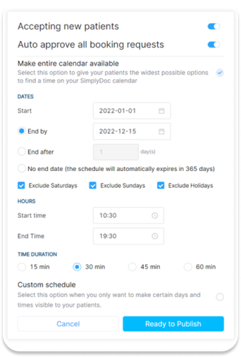
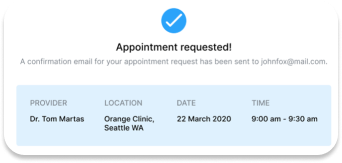
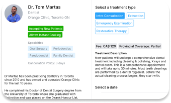

SalusConnect can do so many things for you.
Simplified calendar setting tools
One Window for it all
When we started work on SalusConnect back in February 2021, it quickly
became apparent that we could do it either the easy way or the right
way. The easy way would have allowed us to launch in Q3 2021 but would
have required us to perform less research, spend less than needed time
on product architecture and design and leave important features out
which would be truly valuable to Canadians and the medical community.

Role based Access Management
Power to your staff
At SalusConnect we understand that support staff at your practice play a
key role in the efficient running of daily operations. That’s why, apart
from the providers themselves, staff can seamlessly enter and manage
calendars on behalf of any provider at your practice. And when they are
done managing one calendar, staff can immediately switch to another
provider through the switch pane. Doctors on the other hand have full
read and edit access to their own calendars.
Auto Approvals on tap
Set it and forget it
Auto approvals or Instant Bookings are a people favorite and a proven
way to enhance user experience. When enabled, patients are able to find
and book available appointment slots on your calendar without you
needing to approve them manually. And all this can be enabled or
disabled with a simple selection. Think about after business hours.
Magic.


Zero starter costs
Get started in minutes
Your aspirations to grow your practice no longer need to be bound by
technology limitations. Whether you accept appointments through your
website’s native webform or you don’t have a web-based appointment
booking mechanism at all, SalusConnect can get you going in no time and
with minimal effort. The best part. SalusConnect is fully hosted in the
cloud and only needs an active internet connection. Pick a device of
your choice to utilize the full capabilities of the platform and get
started.
Have a question?
Please send us an email at
onboard@salusconnect.ca